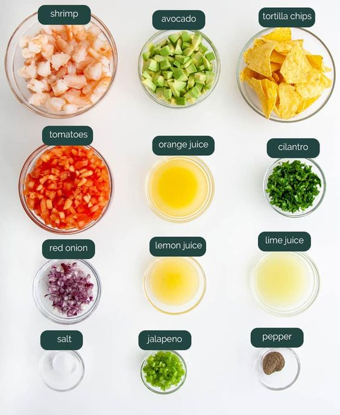
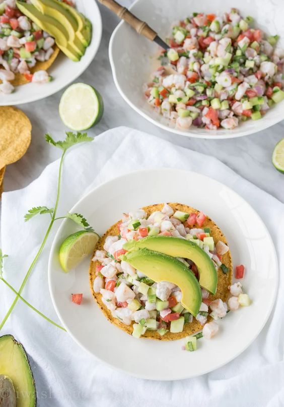

Ceviche
Ceviche is a refreshing and flavorful dish that features raw seafood marinated in citrus juices. It's perfect for a light and zesty appetizer.
-------------- Ingredients ----------------
- 1 lb fresh white fish fillets, diced
- 1 cup fresh lime juice
- 1/2 red onion, thinly sliced
- 1-2 tomatoes, diced
- 1 bell pepper, diced
- 1 jalapeno, minced
- 1/2 cup chopped cilantro
- Salt and pepper to taste

------------- Instructions --------------
- In a bowl, combine the shrimps and lime juice. Make sure the shrimps is fully covered. Refrigerate for about 30 minutes, stirring occasionally, until the fish turns opaque.
- Drain the excess lime juice from the shrimps.
- Add the red onion, tomatoes, bell pepper, jalapeno, and cilantro to the shrimps. Mix gently to combine.
- Season with salt and pepper to taste.
- Chill the ceviche for an additional 15-20 minutes to allow the flavors to meld.
- Serve cold with tortilla chips or fresh avocado slices.
